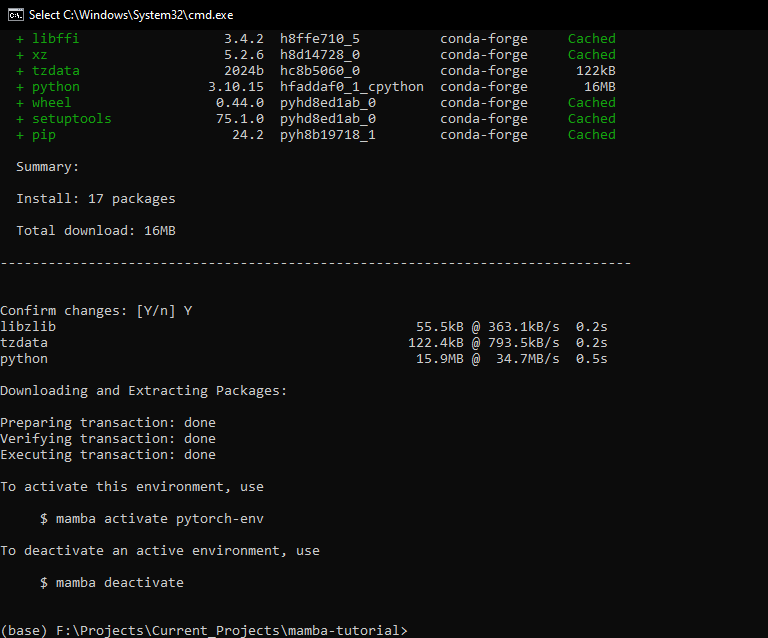
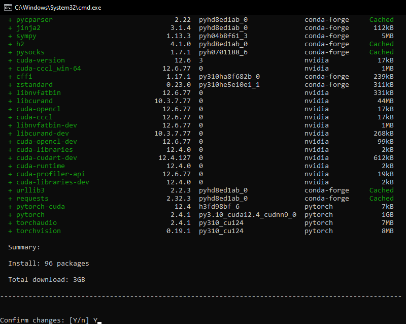

Setting Up a Local Python Environment with Mamba for Machine Learning Projects on Windows
- Introduction
- An Overview of Machine Learning, PyTorch, and Jupyter
- Further Learning
- Installing Mamba
- Access the Miniforge Prompt
- Benefits of Using Virtual Environments
- Creating a Python Environment
- Package Overview
- Installing PyTorch and Jupyter
- Testing PyTorch and Jupyter Notebook Setup
- Managing and Updating Packages with Mamba
- Conclusion
Introduction
This tutorial will guide you through installing Mamba on your Windows machine and using it to create Python environments. Mamba is a high-performance package manager for managing virtual environments, allowing you to maintain separate configurations for different projects without conflicts. It serves as a faster and more reliable drop-in replacement for conda.
We’ll demonstrate Mamba’s effectiveness by installing PyTorch and Jupyter—essential tools for machine learning projects. We’ll verify the PyTorch installation by running a simple test in a Jupyter Notebook. By the end of this tutorial, you’ll be ready to start your machine learning projects using Mamba, PyTorch, and Jupyter.
An Overview of Machine Learning, PyTorch, and Jupyter
Machine Learning enables computers to learn from data and make decisions or predictions without explicit programming. It’s crucial in fields like natural language processing, computer vision, and speech recognition.
PyTorch is a popular open-source machine learning framework that allows for tensor computations and dynamic computational graphs. Its flexibility and ease of use have led to widespread adoption.
Jupyter provides an interactive computing environment for creating and sharing documents containing live code, equations, visualizations, and narrative text. Jupyter Notebooks let you write, run, and debug code in a web-based platform.
Further Learning
If you’re new to machine learning and want to learn more, consider exploring the Practical Deep Learning for Coders course. It uses a hands-on approach with PyTorch and the fastai library to teach you how to apply deep learning to real-world problems.
Installing Mamba
We can install Mamba using PowerShell. Type powershell into the Windows search bar and click Open.
PowerShell is preinstalled on modern Windows versions. If it’s not present on your machine, you can follow the installation steps at the link below:
A command-line interface should open in a new window:

Next, we will run the following commands inside the PowerShell interface to download and run the Miniforge3 installer:
Download the Miniforge3 installer:
Invoke-WebRequest -Uri "https://github.com/conda-forge/miniforge/releases/latest/download/Miniforge3-Windows-x86_64.exe" -OutFile "Miniforge3-Windows-x86_64.exe"This command downloads the latest Miniforge3 installer for Windows from official Miniforge GitHub repository.
Invoke-WebRequest: This cmdlet downloads content from a web page.-Uri: Specifies the URL to download from.-OutFile: Specifies where to save the downloaded file.
Install Miniforge3:
Start-Process -FilePath "Miniforge3-Windows-x86_64.exe" -ArgumentList "/S /InstallationType=JustMe /AddToPath=0 /RegisterPython=0" -WaitThis command silently runs the Miniforge3 installer.
Start-Process: Starts a new process (in this case, the installer).-FilePath: Specifies the program to run.-ArgumentList: Provides arguments to the installer:/S: Runs the installer silently (no user interface)./InstallationType=JustMe: Installs for the current user only./AddToPath=0: Doesn’t add Miniforge to the system PATH./RegisterPython=0: Doesn’t register this as the system’s default Python.
-Wait: Waits for the installation to complete before continuing.
Clean up:
Remove-Item "Miniforge3-Windows-x86_64.exe"This command deletes the installer file after installation.
Remove-Item: Deletes the specified file.
We can close the PowerShell interface after running the last command.
Access the Miniforge Prompt
On Windows, we use Mamba through the Miniforge Prompt. It is a dedicated command-line interface for interacting with conda environments.
Type Miniforge Prompt into the Windows search bar and click Open.

A new command prompt will open at the location of your Windows user folder.
Alternatively, you can activate the Miniforge Prompt from any regular command prompt with the following command:
%USERPROFILE%\miniforge3\Scripts\activateThe text in front of the current directory path indicates the name of the current conda environment.

We can get a list of the available conda environments and their locations using the following command:
mamba env list
The only one listed is base. If we go to the associated directory path in File Explorer, we’ll see the contents for the Miniforge3 installation. Miniforge3 will store any conda environments we create in the “envs” folder.

Benefits of Using Virtual Environments
Before we create a new Python virtual environment, let’s discuss why virtual environments are essential and how they benefit your Python projects.
Isolation of Dependencies: Virtual environments create isolated spaces for each project. This allows you to install and manage different package versions without conflicts. The dependencies of one project won’t interfere with those of another.
Easier Project Management: By maintaining separate configurations for each project, virtual environments make it easy to replicate or share environments with team members. This ensures consistent behavior across different machines and aids collaboration, troubleshooting, and deployment.
Simplified System Maintenance: Using virtual environments prevents cluttering your system-wide Python installation with various packages and versions. You can manage packages within each project’s environment without affecting other projects or your system.
Creating a Python Environment
We can create new Python environments using the mamba create command. The following command will create one called pytorch-env with Python 3.10:
mamba create --name "pytorch-env" python=3.10Mamba will ask you to confirm that you want to install the packages required to create the new conda environment. Type Y into the “Confirm changes” prompt.
Alternatively, you can pre-approve the package installations by adding a -y to the end of the mamba create command.
mamba create --name "pytorch-env" python=3.10 -yLooking in the envs directory, we see a new folder for the conda environment we created.
Once Mamba finishes creating the new environment, it will tell us we can activate and deactivate it using the following commands:
Activate:
mamba activate pytorch-envDeactivate:
mamba deactivate
When we activate it, the name in front of the current directory will change accordingly.

Package Overview
Before installing PyTorch and Jupyter, let’s briefly explore what each package does and why they’re important for machine learning projects.
- PyTorch: Documentation
- PyTorch is a fast and flexible open-source machine learning framework. It allows you to perform tensor computations, build dynamic computational graphs, and create custom machine learning models.
- torchvision: Documentation
torchvisionprovides tools for computer vision tasks, including popular datasets, model architectures, and image transformations.
- torchaudio: Documentation
torchaudiooffers utilities and datasets for audio processing, such as functions for reading and writing audio files, loading popular audio datasets, and applying audio-specific transformations.
- Jupyter: Website
- Jupyter is an open-source project that lets you create and share documents containing live code, equations, visualizations, and text. With Jupyter Notebook, you can write, run, and debug code in a web-based environment while including visualizations and explanatory text.
Installing PyTorch and Jupyter
We can install packages in our custom Python environment using mamba or the pip package installer. To use mamba, we replace the word conda in any conda install commands.
These are the mamba and pip commands to install PyTorch on Windows machines with Nvidia GPUs:
mamba install pytorch torchvision torchaudio pytorch-cuda=12.4 -c pytorch -c nvidiapip install torch torchvision torchaudio --index-url https://download.pytorch.org/whl/cu124For users without an Nvidia GPU:
mamba install pytorch torchvision torchaudio cpuonly -c pytorchpip install torch torchvision torchaudioI’ll install the packages with mamba for this tutorial. As before, type Y into the “Confirm changes” prompt.

Alternatively, you can pre-approve the package installations by adding a -y to the end of the mamba install command.
mamba install pytorch torchvision torchaudio pytorch-cuda=12.4 -c pytorch -c nvidia -yInstallation time can vary depending on your system’s hardware and Internet speed. Once it finishes, we’ll install Jupyter using the following command:
mamba install jupyter -ypip install jupyter
Testing PyTorch and Jupyter Notebook Setup
Now that we have PyTorch and Jupyter installed in our Python environment, we can verify everything works as expected by importing PyTorch into a Jupyter Notebook.
We can launch a Jupyter Notebook environment using the following command:
jupyter notebook
The Jupyter Notebook environment will launch in a new tab in your default web browser.
To create a new Jupyter Notebook, open the New drop-down menu and select the Python 3 (ipykernel)option.
The notebook will open in a new tab.

We can import PyTorch and verify it can use the Nvidia GPU by running the following code in the notebook:
import torch
torch.cuda.is_available()Select the code cell with your mouse and press Ctrl+Enter to run the code or Shift+Enter to run the code and move to the next cell.

Managing and Updating Packages with Mamba
This section covers the commands to manage and update packages in your Python environment using Mamba. Proper package management is crucial for maintaining project stability and ensuring compatibility between dependencies.
Listing Installed Packages
To view all the installed packages within your active Python environment, use the following command:
mamba listThis command will display a list of installed packages and their respective versions and channels.
Updating a Package
Updating a package to its latest version is simple with Mamba. Use the following command, replacing package-name with the name of the package you want to update:
mamba update package-nameMamba will search for the latest version of the package, resolve any dependencies, and prompt you to confirm the update.
Updating All Packages
To update all packages within the active Python environment to their latest versions, run the following command:
mamba update --allMamba will check for updates for all installed packages and prompt you to confirm the changes.
Installing a Specific Package Version
To install a specific package version, use the “=” sign to append the desired number to the package name. For example, to install version 1.0.0 of a package named example-package, use the following command:
mamba install example-package=1.0.0Removing a Package
To remove a package from the active Python environment, use the remove command, replacing package-name with the name of the package you want to remove:
mamba remove package-nameMamba will prompt you to confirm the removal of the package and its dependencies.
Searching for Packages
You can search for packages across various channels using the search command. To search for a package named example-package, run:
mamba search example-packageThis command will display a list of available versions and channels for the specified package.
With these commands, you can effectively manage and update packages in your Python environment using Mamba, ensuring your projects stay up-to-date and compatible with the latest dependencies.
Conclusion
In this tutorial, you accomplished the following:
- Installed the Mamba package manager on your Windows machine.
- Created a local Python virtual environment for your machine learning project.
- Installed essential tools like PyTorch and Jupyter to help build machine learning models.
By leveraging virtual environments, you can:
- Maintain separate configurations for different projects.
- Avoid dependency conflicts between packages.
- Streamline project management and collaboration.
- Feel free to post questions or problems related to this tutorial in the comments below. I try to make time to address them on Thursdays and Fridays.
I’m Christian Mills, a deep learning consultant specializing in practical AI implementations. I help clients leverage cutting-edge AI technologies to solve real-world problems.
Interested in working together? Fill out my Quick AI Project Assessment form or learn more about me.